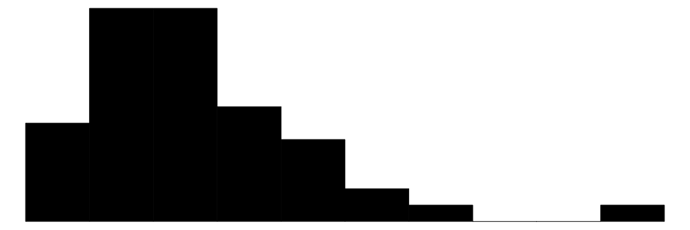

53 Modellieren in R
Letzte Änderung am 04. November 2025 um 20:09:55
“Ich weiß nicht weiter; Ich will mich verändern; Doch wie fang ich’s an?” — Tocotronic, Die Unendlichkeit

VorsichtStand des Kapitels: Konstruktion (seit 07.2025)
Dieses Kapitel wird in den nächsten Wochen geschrieben und ist damit meine aktuelle Großbaustelle. Ich plane zum Ende des Wintersemesters 2025/26 eine fertige Version des Kapitels erstellt zu haben. Während das Kapitel entsteht, funktioniert so manches dann nicht so wie es soll. Bitte daher hier dann abwarten.
Dieses Startkapitel gibt dir nochmal eine Übersicht über das statistische Modellieren in R. Hier liegt vor allem der Fokus auf R. Es gibt eben eine Reihe von zusätzlichen Pakten, die es dir erlauben noch mehr aus einem statistischen Modell rauszuholen. Am Ende wurde es mir dann aber zu detailliert alle Pakete in jedem Kapitel vorzustellen und anzuwenden. Das ist auch nicht immer sinnig. Häufig willst du erstmal nur das Modell rechnen. Später kannst du dann noch tiefer ins Detail gehen oder aber komplexere Verfahren nutzen. Ich tue mich also etwas schwer dieses Kapitel einzuordnen. Entweder packen wir es ans Ende vom statistischen Modellieren und schauen, dann wie wir alles in R machen. Das steht aber etwas der Intuition entgegen, dass wir in jedem Kapitel zum statistischen Modellieren ja schon was selber machen wollen. In R gibt es dazu dann noch sehr gute Pakete, die das Modellieren sehr viel einfacher machen, dabei dann aber auch für den Anfänger etwas komplexer sind. Ich habe mich daher entschieden, diese aktuelle und komplexere Modellierung einmal hier am Anfang vorzustellen und in den folgenden Kapiteln teilweise darauf zu verweisen, wenn ich es sinnig fand. Du kannst alle Modelle auf althergebrachte Art und Weise rechnen ohne was zu verpassen. Aber manchmal möchte man dann auch effizienter Modellieren. Dafür ist dann dieses Kapitel da: Eine erweiterte Idee von der statistischen Modellierung zu erlangen. Fangen wir also erstmal mit der naheliegenden Frage an.
53.1 Allgemeiner Hintergrund

Modelle sollten visualisiert werden. Oder andersherum, wenn wir etwas in Zusammenhang setzen wollen, dann sollten wir diesen Zusammenhang auch darstellen können. Manchmal scheint es nicht möglich, aber dann lohnt sich das ausprobieren und nachdenken, wie Variablen miteinander visualisiert werden können. Oder wie wir allgemeiner wie folgt als eine Art Flowchart schreiben können.
Das R Paket {modelbased} schlägt folgenden Weg für das Modellieren vor. Dabei sind es nur fünf Schritte, die wir iterativ durchführen können.
- Zeichne zuerst, was du visualisieren möchtest. Nutze hierzu auch erstmal nur eine Skizze und danach die echten Daten.
- Erstelle ein Modell für deine Visualisierung.
- Wähle das beste Modell nach statistischen Maßzahlen aus.
- Visualisiere das beste Modell in deiner Visualisierung. Bringe also Modell und Daten zusammen.
- Untersuchen die Parameter des Modells um mehr über die Zusammenhänge zu erfahren.
In dem Buch Statistical Thinking for the 21st Century — Practical statistical modeling? findest du dann nochmal einen anderen Prozess vorgeschlagen. Die Idee ist ähnlich, aber ergänzt noch um ein paar Punkte.
- Formuliere deine wissenschaftliche Fragestellung.
- Identifiziere oder sammle die entsprechenden Daten.
- Bereite die Daten für die statistische Analyse vor.
- Bestimme das geeignete statistische Modell. Nehme im Zweifel mehrere Modelle in deine Betrachtung.
- Passen das statistische Modell an die Daten an.
- Überprüfe das statistische Modell kritisch, um sicherzustellen, dass das Modell richtig passt.
- Teste die Hypothese und quantifizieren mögliche Effektgrößen.
Am Ende bauen wir immer ein Modell der Wirklichkeit aus unseren Daten. Wir messen selten alles was es zu messen gibt oder wert wäre gemessen zu werden. Daher sind unsere Modelle der Daten immer falsch, aber manchmal eben dann doch nützlich. Wenig Beobachtungen decken weniger Wirklichkeit ab und daher sind diese Modell schon intuitiv schlechter als Modelle mit mehr Beobachtungen. Aber lasse dich nicht abschrecken. auch mit weniger Daten lassen sich Schlüsse über Zusammenhänge finden. Nachdem wir einmal kurz klären, was genau ich immer meine, wenn ich von Faktoren und Kovariaten schreibe, gehen wir nochmal auf das Modell als Idee ein.
Sprachlicher Hintergrund
“In statistics courses taught by statisticians we don’t use”independent variable” because we use independent on to mean stochastic independence. Instead we say predictor or covariate (either). And, similarly, we don’t say “dependent variable” either. We say response.” — User berf auf r/AskStatistics
Wenn wir uns mit dem statistischen Modellieren beschäftigen wollen, dann brauchen wir auch Worte um über das Thema reden zu können. Statistik wird in vielen Bereichen der Wissenschaft verwendet und in jedem Bereich nennen wir dann auch Dinge anders, die eigentlich gleich sind. Daher werde ich mir es hier herausnehmen und auch die Dinge so benennen, wie ich sie für didaktisch sinnvoll finde. Wir wollen hier was verstehen und lernen, somit brauchen wir auch eine klare Sprache.
In dem folgenden Kasten erkläre ich nochmal den Gebrauch meiner Begriffe im statistischen Testen. Es ist wichtig, dass wir hier uns klar verstehen. Zum einen ist es angenehmer auch mal ein Wort für ein Symbol zu schreiben. Auf der anderen Seite möchte ich aber auch, dass du dann das Wort richtig einem Konzept im statistischen Modellieren zuordnen kannst. Deshalb einmal hier meine persönliche und didaktische Zusammenstellung meiner Wort im statistischen Modellieren.
WichtigWorte und Bedeutungen im statistischen Modellieren
“Die Grenzen meiner Sprache bedeuten die Grenzen meiner Welt.” — Ludwig Wittgenstein
Hier kommt einmal die Tabelle mit den wichtigsten Begriffen im statistischen Modellieren und wie ich die Worte benutzen werde. Damit wir uns verstehen und du was lernen kannst. In anderen Büchern und Quellen findest du teilweise die Worte in einem anderen Sinnzusammenhang. Das ist gut so dort. Bei mir ist es anders.
| Symbol | Deutsch | Englisch | |
|---|---|---|---|
| LHS | \(Y\) / \(y\) | Messwert / Endpunkt / Outcome / Abhängige Variable | response / outcome / endpoint / dependent variable |
| RHS | \(X\) / \(x\) | Einflussvariable / Erklärende Variable / Fester Effekt / Unabhängige Variable | risk factor / explanatory / fixed effect / independent variable |
| RHS | \(Z\) / \(z\) | Zufälliger Effekt | random effect |
| \(X\) ist kontinuierlich | \(c_1\) | Kovariate 1 | covariate 1 |
| \(X\) ist kategorial | \(f_A\) | Faktor \(A\) mit Level \(A.1\) bis \(A.j\) | factor \(A\) with levels \(A.1\) to \(A.j\) |
Am Ende möchte ich nochmal darauf hinweisen, dass wirklich häufig von der abhängigen Variable (eng. dependent variable) als Messwert und unabhängigen Variablen (eng. independent variable) für die Einflussvariablen gesprochen wird. Aus meiner Erfahrung bringt die Begriffe jeder ununterbrochen durcheinander. Deshalb einfach nicht diese Worte nutzen.

Was ist ein Modell
“Doch in Wahrheit muss Wissen immer zuerst vermutet und dann überprüft werden.” — David Deutsch, Der Anfang der Unendlichkeit
Was ist ein Modell? Da sich unser Modell auf Daten bezieht, denn nichts anderes haben wir ja in R vorliegen, ist unser Modell immer eine Zusammenstellung von Einflussvariablen und häufig einem Messwert. Es gibt einfache Arten der Modellierung wo wir eine Linie durch eine Punktewolke zweier Kovariaten zeichnen. Es gibt aber auch komplexere Modelle, die wie Netze oder Bäume aussehen. Am Ende haben aber alle Modelle eine Basis. Nämlich deine Daten, die du in diese Modelle hinsteckst.
- Was modellieren wir jetzt eigentlich?
-
Wir modellieren die Varianz in den Daten. Dabei versuchen wir die Varianz im Messwert durch die Einflussvariablen zu minimiere. Oder anders formuliert, wir versuchen die Varianz in den Daten den jeweiligen Quellen zuzuordnen und darüber dann neue Erkenntnisse zu erlangen. Meistens ist es dann einfach eine Linie durch die Punkte zu zeichnen.
Somit haben wir immer unsere Daten vorliegen. Wir versuchen jetzt unsere Daten durch unser Modell als statistisches Modell zu verstehen. Wir zerlegen somit die Daten in zwei Komponenten. Den Teil der Messwerte, den wir durch das Modell erklären können und noch den Rest, den wir als Fehler oder unbekannten Messwert erklären. Mehr dazu dann in dem Buch zu Statistical Thinking for the 21st Century — What is a model?. Es geht eben um Daten und die Erklärung der Daten durch ein Modell.
{kind=link}
Oder um es etwas anders zu formulieren, “Models are about what changes, and what doesn’t”. Wir wollen also wissen was sich in den Daten ändert und wie wir diese Änderung beschreiben können. Somit wollen wir uns die Frage stellen, was ist eigentlich das Ziel des Modellierens? Wir wollen ja mit der Modellierung der Varianz irgendwas erreichen. In der folgenden Abbilundung siehst du einmal die drei großen Fragefelder, die wir mit einer Modellierung bearbeiten können. Du musst dir dann überlegen, wie du deine wissenschaftliche Fragestellung dann dort unterbringen kannst. Wir können uns fragen, ob es einen kausalen Zusammenhang gibt? Was passiert mit unserem Messwert, wenn sich die Einflussvariablen ändern? Wir können ein prädiktives Modell rechnen in dem wir neue Messwerte anhand neuer Einflussvariablen mit unserem Modell vorhersagen. Oder aber wir wollen Cluster in unseren Daten finden.

R Pakete zum Modellieren
Neben den R Paketen, die wir in den jeweiligen Kapiteln brauchen, kommen noch folgende R Pakete immer wieder dran. Deshalb sind die R Pakete hier schon mal mit den jeweiligen Internetseiten aufgeführt.
- Das Buch Tidy Modeling with R gibt nochmal einen tieferen Einblick in das Modellieren in R. Wir immer, es ist ein Vorschlag aber kein Muss.
- Das R Paket
{parameters}nutzen wir um die Parameter eines Modells aus den Fits der Modelle zu extrahieren. Teilweise sind die Standardausgaben der Funktionen sehr unübersichtich. Hier hilft das R Paket. - Das R Paket
{performance}hilft uns zu verstehen, ob die Modelle, die wir gefittet haben, auch funktioniert haben. In einen mathematischen Algorithmus können wir alles reinstecken, fast immer kommt eine Zahl wieder raus. - Das R Paket
{tidymodels}nutzen wir als ein R Paket um mit Modellen umgehen zu können und eine Vorhersage neuer Daten zu berechnen. Das Paket{tidymodels}ist wie das Paket{tidyverse}eine Sammlung an anderen R Paketen, die wir brauchen werden. - Das R Paket
{ggeffects}hilft dir bei der Visualisierung von Effekten aus statistischen Modellen. Du kannst hier recht einfach Effekte und andere Maßzahlen aus deinen Modellen darstellen. - Das R Paket
{modelbased}ist ein Wrapper für die R Pakete{marginaleffects}und{emmeans}und sagt von sich selber, dass es die Anwendung der beiden Pakete erleichtert. Das kann man so sehen, muss man aber nicht. - Das R Paket
{marginaleffects}nutzen wir dann im Kapitel zu den Marginal effects models. Daher brauche ich das obige Paket nicht sondern nutze es direkt als Original. Mehr zu den Marginal effects models dann in den entsprechenden Kapiteln zu dem statistischen Modellieren.
Auch gibt es noch andere R Pakete, die wir nutzen können und auch werden. Dafür ist das Feld zu groß und die Anwendungsmöglichkeiten zu komplex. Daher hier nur eine Auswahl an möglichen Pakten und Ideen. Kommen wir als nächstes einmal zu dem theoretischen Teil.
53.2 Theoretisches Modellieren
Fangen wir also erstmal allgemeiner an ein Modell und deren Schreibweise zu verstehen. Da wir uns natürlich in R bewegen für die praktische Anwendung, nutzen wir auch die Modellschreibweise, die in R üblich ist. Die Schreibweise ist schon etwas älter und stammt von Wilkinson & Rogers (1973) aus der Arbeit Symbolic Description of Factorial Models for Analysis of Variance. In R wird diese Schreibweise auch formula() genannt. Im Folgenden siehst du einmal ein Modell in einer abstrakten Form. Wir haben den Messwert \(Y\) auf der linken Seite (eng. left hand side, abk. LHS) der Tilde und die Einflussvariablen \(X\) auf der rechten Seite (eng. right hand side, abk. RHS). Dabei steht dann das \(X\) hier einmal als Platzhalter und Sammelbegriff für verschiedene Arten von möglichen Variablen.

In R sieht es dann etwas anders aus, da wir die Platzhalter \(Y\) für den Messwert und \(X\) für die Einflussvariable durch die Namen der Spalten in unserem Datensatz ersetzen. Der Datensatz liegt dann als tibble() in R vor. Mehr dann dazu in den folgenden Beispielen in den jeweiligen Kapiteln zum Modellieren. Dann sieht das Modell wie in der folgenden Abbildung aus, wenn wir uns einmal die Sprungweite in Abhängigkeit von der Flohart anschauen wollen.

Dann wäre es ja schön, wenn wir nur die linke und rechte Seite neben einer Tilde hätten. Das ist aber nur eine sehr abstrakte Darstellung. Es ha ja auch seinen Grund, warum wir sehr viele Kapitel in diesem Openbook dem Thema des statistischen Modellieren widmen. Wir haben nämlich eine richtig schrecklich nette Familie an Möglichkeiten zusammen.
In der folgenden Abbildung siehst du einmal wie alles mit allem zusammenhängt. Auf der linken Seite siehst du den Messwert \(Y\) der einer Verteilunsgfamilie entstammt. Je nachdem was du wie gemessen hast, folgt dein Messwert \(Y\) einer anderen Verteilung. Konkreter noch, welche Zahlen du für deinen Messwert \(Y\) bestimmt hast. Auf der rechten Seite findest du die Einflussvariable \(X\), die aus mehren Variablen bestehen kann aber nicht muss. Wenn du eine kontinuierliche Einflussvariable vorliegen hast, dann sprechen wir von Kovariaten. Hast du dagegen kategoriale Einflussvariablen, dann sprechen wir von Faktoren mit Leveln als die Gruppen. Je nach Kombination aus Verteilungsfamilie und Einflussvariable hast du dann eine andere Interpretation der Modellierung vorliegen.

Da wir die schrecklich nette Familie ja auch irgendiwe bezeichnen müssen, hat sich folgende Semantik mehr oder minder durchgesetzt. Ich nutze jedenfalls den folgenden Aufbau um zu benennen was ich eigentlich analysieren und modellieren will. Zuerst kommt, ob wir eine Einflussvariable oder mehrere Einflussvariablen betrachten. Wir nennen dann eben die Modellierung eine simple oder multiple Modellierung. Dann kommt die Verteilunsgfamilie des Messwerts als Wort um dann noch zu sagen, ob wir es mit einem gemischten Modell zu tun haben. Haben wir kein gemischtes Modell, dann lassen ignorieren wir den Teil. Häufig sprechen wir auch von einer linearen Regression, wenn wir eine Gaussian linear Regression meinen. Das finde ich aber sehr verwirrend und nicht klar. Deshalb vermeide ich diesen Sprachgebrauch, wenn wir es mit komplexeren Modellen zu tun haben.

Jetzt müssen wir natürlich unsere schematische Abbildung nochmal in R übersetzen. Dort nutzen wir dann je nach Verteilungsfamilie unseres Messwertes \(Y\) eine andere Funktion um die statistischen Modelle anzupassen. Das ist im ersten Moment etwas verwirredn, aber wir können eben nicht mit einer einzigen Funktion alle möglichen Ausprägungen von Zahlen in einem Messwert modellieren. Dafür brauchen wir dann eben mehr Algorithmen und so auch Funktionen.
- Die Funktion
lm()oderaov()nutzen wir, wenn der Messwert \(Y\) einer Normalverteilung folgt. - Die Funktion
glm()nutzen wir, wenn der Messwert \(Y\) einer andere Verteilung folgt. - Die Funktion
lmer()nutzen wir, wenn der Messwert \(Y\) einer Normalverteilung folgt und wir noch einen Block- oder Clusterfaktor vorliegen haben. - Die Funktion
glmer()nutzen wir, wenn der Messwert \(Y\) einer andere Verteilung folgt und wir noch einen Block- oder Clusterfaktor vorliegen haben.
Im Prinzip folgt die Benennung der Funkionen auch einem übergeordneten Schema, wie ich dir in der folgenden Abbildung einmal versuche zu zeigen. Wir haben im Zentrum das lineare Modell (abk. lm) und dann ergänzen wir die Generalisierung (abk g) oder eben den zufälligen Effekt (abk. *er*) zum Modell. Dadurch haben wir dann die verschiedenen Funktionen einmal zusammen.

lm() für eine lineare Regression zur generalisierten Variante glm() und der beiden Varianten für die gemischten linearen Modellen lmer() und glmer(). [Zum Vergrößern anklicken]
In diese Funktionen schreiben wir dann die jeweiligen Modelle. Da die Modelle eben auch von den Einflussvariablen abhängen, haben wir jetzt die Wahl zwischen einem simplen Modell, einem multiplen Modell sowie einen gemischten Modell. Dabei ist darauf zu achten, dass ein gemischtes Modell nicht bedeutet, dass wir Kovariaten und Faktoren kombinieren, sondern noch einen zufälligen Clustereffekt als Faktor modellieren wollen. In den folgenden Tabs, habe ich dir nochmal die Modelle aufgeschrieben. Jedes dieser Modelle können wir mit allen Funktionen rechnen. Bachte bitte dabei, dass es sich hier nur um die abstrakte Form handelt.
In einem simplen Modell haben wir nur eine Einflussvariable \(X\) entweder als Faktor oder als Kovariate vorliegen. Wir müssen uns hier als entscheiden, ob wir ein einfaktorielles Modell oder ein einkovariates Modell anpassen wollen. Wir nennen daher diese Art von Modell auch simple lineare Regression, wenn wir ein reines kovariates Modell rechnen.

In dem multiplen Modell erweitern wir die Anzahl an erklärenden Variablen um mindestens eine weitere Variable. Ein multiples Modell hat mindestens zwei Einflussvariablen als \(X\). Meistens sind es jedoch mehr als nur zwei Vairablen. Wir können auch eine Kombination aus Faktoren und Kovariaten vorliegen haben, was die Interpretation unserer Modelle immer schwieriger macht.

Wir sprechen von einem gemischten Modell (eng. mixed model), wenn wir neben unseren klassischen Einflussvariablen wie den Kovariaten und Faktoren als feste Effekte noch einen zufälligen Effekt mit in unserem Modell haben. Das Wort “zufällig” ist hier etwas verwirrend, den es beschreibt eigentlich einen zusätzlichen Faktor. Dieser zusätzliche Faktor steht für einen Cluster oder einen Block oder noch allgemeiner für eine Gruppe von Beobachtungen. Die gemischten Modelle sind dabei eine eigene große Klasse von Modellen.

Nachdem wir uns jetzt einmal über den theoretischen Aufbau von Modellen ausgetauscht haben, wollen wir uns einmal die Grundlagen des praktischen Modellierens in R austauschen. Hier gibt es dann natürlich eine eigene Schreibweise um die theoretischen Modelle in R zu übersetzen. Ich nutze auch nicht die vollen Möglichkeiten sondern meistens nur die grundlegenden Möglichkeiten. Aber hier schreibe ich dann einfach mal alle. Dann haben wir alles mal zusammen.
53.3 Genutzte R Pakete
Wir wollen folgende R Pakete in diesem Kapitel nutzen.
R Code [zeigen / verbergen]
pacman::p_load(tidyverse, emmeans, multcomp, ggpmisc, gtsummary,
tidymodels, modelsummary, conflicted)
conflicts_prefer(dplyr::select)
conflicts_prefer(ggplot2::annotate)An der Seite des Kapitels findest du den Link Quellcode anzeigen, über den du Zugang zum gesamten R-Code dieses Kapitels erhältst.
53.4 Daten
Wir brauchen auch hier nochmal Daten an denen wir uns die Prinzipien des Modellierens in R verstehen zu können. Als Datensatz habe ich nochmal die Modellierung von Flöhen mitgebracht. In dem Datensatz zu der Modellierung von Flöhen finden wir viele Kovariaten sowie Faktoren und verschiedene Messwerte, die von Interesse sind. Wir schauen uns hier die Sprungweiten von Katzenflöhen unter verschiedenen Fütterungebedingungen an. Dabei haben die Katzenflöhe einmal Zuckerwasser, Ketchup sowie Blut als Nahrung erhalten. Als zweiten Faktor betrachten wir dann noch juvenile und adulte Flöhe. Neben diesen beiden Faktoren, haben wir dann noch die Kovariate des Gewichts der Flöhe erhoben. Als weitere Messwerte kommen dann die Bonitur der Flöhe, die Anzahl der Haare an einem Flohbein sowie der Infektionsstatus mit Flohschnupfen in Betracht. Teilweise können wir dann die kontinuierlichen Messwerte auch als Kovariaten in unseren Modellen verwenden. Da sind wir ja nicht festgelegt. Wir laden dann die Daten einmal in R und müssen noch etwas die Faktoren anpassen.
R Code [zeigen / verbergen]
flea_model_tbl <- read_excel("data/fleas_model_data.xlsx") |>
mutate(feeding = as_factor(feeding),
stage = as_factor(stage),
bonitur = as.numeric(bonitur),
infected = factor(infected, labels = c("healthy", "infected"))) |>
select(feeding, stage, weight, jump_length, count_leg, bonitur, infected) Dann können wir uns auch schon mal einen Auszug aus der Datentabelle zu den Sprungweiten der Katzenflöhe anschauen.
| feeding | stage | weight | jump_length | count_leg | bonitur | infected |
|---|---|---|---|---|---|---|
| sugar_water | adult | 16.42 | 77.2 | 63 | 4 | infected |
| sugar_water | adult | 12.62 | 56.25 | 55 | 1 | healthy |
| sugar_water | adult | 15.57 | 73.42 | 112 | 2 | healthy |
| … | … | … | … | … | … | … |
| ketchup | juvenile | 7.18 | 83.38 | 423 | 4 | infected |
| ketchup | juvenile | 6.6 | 104.48 | 548 | 5 | infected |
| ketchup | juvenile | 4.19 | 130.18 | 869 | 5 | healthy |
Dann können wir uns einmal ausgewählte Boxplots und Dotplots für die Flohdaten anschauen. Wir sehen hier sehr schön, dass sich die Sprungweiten über die Ernährungsformen und den Entwicklungsständen anscheinend unterschieden. Auch haben wir Effekte in der Anzahl an Beinhaaren. Die Boniturnoten sehen eher etwas gleichmäßiger aus. Die eigentlichen Effekte oder statistischen Tests wollen wir dann auszugsweise in den folgenden Abschnitten einmal rechnen.
{kind=link}
53.5 Formelschreibweise in R
Wir gehen wir nun praktisch in R vor? Dafür brauchen wir nochmal kurz unsere Idee der linken sowie rechten Seite der Tilde. Zusammen bilden die beiden Seiten ja ein Modell in R. In der folgenden Abbildung siehst du nochmal das Konzept. Auf der linken Seite haben wir unseren Messwert und auf der rechten Seite dann mindestens eine, wenn nicht mehr, Einflussvariablen stehen. Daher unterscheiden wir gleich einmal die beiden Seiten und betrachten die Erstellung eines Modells getrennt.
{kind=link}
Wir immer gibt es wieder einiges mehr zu den Modellen in R und deren Schreibweise. Ich habe mich an den folgenden Blogs, Tutorien und Seiten orientiert. Vielleicht findest du ja dort nochmal mehr Informationen, die dir wertvoll sind. Hier ist es dann immer das Extrakt vieler Quellen. Wir steigen dann aber gleich mal in die Beschreibung der linken und der rechten Seite der Tilde ein.
TippWeitere Tutorien für die Formelschreibweise in R
Hier findest du nochmal ein paar Links und Webseiten, die sich mit der Formelschreibweise in R beschäftigen. Teilweise dienten die Seiten für mich als Inspiration. Häufig findest du noch mehr informationen als hier zusammengetragen wurden.
- Model Formulae in R gibt dir nochmal einen Überblick über die Möglichkeiten ein Modell in R zu formulieren. Hier gibt es eine Menge an Beispielen.
- Das R Formula Tutorial liefert nochmal einen sehr umfangreichen Einstieg in das Modellieren in R und wie wir das im allgemeinen machen würden. Dabei wird auf die Standardfunktionen eingegangen und der Fokus liegt eben Anfängern im Modellieren.
- Die Hilfeseite zu
formula()in{stats}gibt nochmal die Grundlagen der Formelschreibweise in R in der üblichen Hilfeform. Manchmal sind die Hilfeseiten hilfreich, für Anfänger aber aus meiner Erfahrung heraus eher weniger. - The R Formula Cheatsheet ist nochmal eine gute Idee, wenn du schon die Grundlagen kennst, dich aber nochmal über die Möglichkeiten die gehen schlau machen möchtest.
- Formulae in R – ANOVA and other models, mixed and fixed erweitert nochmal die Formelschreibweise für die faktoriellen Experimente in der Form der ANOVA und der gemischten Modelle. Je nach Fachgebiet ist das eine Nische oder dein ganzer Wissenschaftsbereich.
Right-hand side (abk. RHS)
Auf der rechten Seite der Tilde stehen die Einflussvariablen. Wir haben mindestens eine Einflussvariable in einem simplen Modell vorliegen. Wenn wir mehrere Einflussvariablen in unser Modell aufnehmen wollen, dann verbinden wir die Einflussvariablen mit einem Pluszeichen + miteinander. Wir können dann noch weitere Terme hinzufügen. Diese Terme können dann zusätzliche Faktoren oder Kovariaten beschreiben. Oder wir ergänzen einen Interaktionsterm zum Modell. Wir haben auch die Möglichkeiten die Fehler etwas anders zu modellieren, wenn wir zum Beispiel eine komplexere ANOVA rechnen wollen. Wenn wir uns eine Kovariate anschauen, dann können wir auch Polynome bestimmen, wenn wir zum Beispiel eine quadratische Funktion ergänzen wollen. Dazu kommen dann noch die Möglichkeit Transformationen direkt im Modell zu machen. Davon rate ich aber ab, deshalb lassen wir es hier mal lieber. Wir bauen uns einen sauberen Datensatz und auf dem Modellieren wir dann. In der folgenden Tabelle siehst du nochmal gängige Symbole und deren Bedeutung in der Modellierung der rechten Seite des Modells.
| Symbol | Bedeutung | Beispiel |
|---|---|---|
~ |
Trennt die LHS mit dem Messwert von der RHS mit den Einflussvariablen in dem Modell. | y ~ x |
+ |
Addiert eine Einflussvariable auf der RHS in dem Modell. | y ~ x + z |
. |
Nimm alle Spalten aus dem Datensatz außer y mit in das Modell. |
y ~ . |
- |
Entferne eine Einflussvariable aus dem Modell. | y ~ . - x |
1 oder 0 |
Entfernt den Intercept aus dem Modell und setze den Intercept auf Null. | y ~ 0 + x oder y ~ x - 1 |
: |
Konstruiert einen Interaktionsterm. | y ~ fa + fb + fa:fb |
* |
Erstellt alle Kombinationen aus den entsprechenden Einflussvariablen plus Interaktionsterme. | y ~ fa * fb |
^ |
Erstellt Interaktionen höherer Ordnung zwischen allen Einflussvariablen. | y ~ (fa + fb + fc)^3 |
I() |
Das as-is Symbol in der Modellschreibweise und erlaubt somit quadratische Einflussvariablen. |
y ~ x + I(x^2) |
poly() |
Erlaubt Polynome für eine Einflussvariable zu erstellen. Die bessere Alternative zu quadratische Termen. | y ~ poly(x, 2) |
Left-hand side (abk. LHS)
Auf der linken Seite der Tilde steht dann unser Messwert. Wir haben in einem normalen Modell immer nur den einen Messwert stehen. Wenn wir uns in der Überlebenszeitanalyse befinden, dann können wir auch auch zwei Werte dort im Objekt surv() finden. Ebenso bei der der Durchführung der binomialen oder quasibinomialen Modellierung geben wir entweder eine Erfolgswahrscheinlichkeit, eine zweispaltige Matrix mit den Spalten für die Anzahl der Erfolge und Misserfolge oder einen Faktor an, bei dem die erste Stufe für Misserfolg und die anderen für Erfolg auf der linken Seite der Gleichung stehen. Das ist jetzt aber schon eher sehr speziell. Im Normalfall steht einfach nur unser Messwert links.
| Symbol | Bedeutung | Beispiel |
|---|---|---|
y |
Erhobener Messwert, der in dem statistischen Modell analysiert werden soll. | jump_length ~ . |
Surv(t, f) |
In dem Objekt Surv() haben wir erst die Spalte für die Zeit t und dann die Spalte für das Eintreten des Ereignisses f mit \(0/1\) in einer survfit() Funktion. |
Surv(time, death) ~ . |
cbind(n, 1-n) |
Die Spalte mit der Anzahl des Ereignisses sowie die Spalte mit dem Gegenereignis in einer glm() Funktion. |
cbind(disease, no_disease) ~ . |
Hilfreiche Funktionen
Wenn es eine Funktion gibt, die mir immer mal wieder beim Bauen von Formeln in R geholfen hat, dann ist es die Funktion reformulate(). Wir können nämlich der Funktion die linke Seite sowie die rechte Seite des Modells einfach als Wörter angeben und dann erhalten wir die Formelaschreibweise in R zurück. Das ist manchmal super praktisch.
R Code [zeigen / verbergen]
reformulate(termlabels = "feeding * stage + weight",
response = "jump_length")jump_length ~ feeding * stage + weightEs gibt noch die update() Funktion, die uns erlaubt dynamisch Modelle zu aktualisieren. Ich würde das aber überhaupt nicht empfehlen, da du dann schnell mal den Überblick verlieren kannst, was jetzt wie im Modell ist. Ich habe das nie richtig verstanden, was der Vorteil davon sein soll, dass Modell einfach zu kopieren und dann zu ändern. Am Ende musst du die Modelle sowieso miteinander vergleichen um zu sehen welches Modell das beste Modell ist.
53.6 Praktisches Modellieren
Wenn wir von dem praktischen Modellieren in R sprechen, dann können wir grob zwischen dem Standard {base} in R und neueren Paketen unterscheiden. Dabei sind die neueren Pakete vorallem darauf optimiert, dass wir auf Listen oder aber mit dem Pipe-Operator arbeiten können. Nichts spricht dagegen mit den klassischen Funktionen zu arbeiten. In den folgenden Kapiteln nutze ich auch die Implemntierungen in {base} und {stats}, die schon sehr alt sind. Die Funktionen lm(), glm() und Weitere finktionieren aber super und sind für den alltäglichen Gebrauch auch sehr gut geeignet. Manchmal werden aber die Daten größer, da wir mehr Messwerte vorliegen haben oder aber einfach mehr Einflussvariablen. Dann gibt es bessere Lösungen. Davon möchte ich hier dann einige vorstellen.
Wenn du mit R Modellieren willst, dann bietet sich das R Paket {tidymodels} auf jeden Fall an. Dazu dann noch das Openbook Tidy Modeling with R lesen und du kannst anfangen. Dort wird sehr sauber einmal die Modelle und deren Überprüfung hergeleitet. In dem R Paket {tidymodels} geht auch das R Paket {parsnip} auf, welches wir hier gleich einmal vorstellen wollen. Neben dieser Paketwelt gibt es dann noch die Möglichkeiten das R Paket {easystats} mit den R Paketen {performance} und {parameters} sowie anderen tollen Paketen zu nutzen. Ich finde, dass sich die {tidymodels} eher im Bereich der Vorhersage bewegen und nicht so sehr in den erklärenden Modellen. Dafür sind dann die R Pakete aus {easystats} besser geeignet. Wenn es dann aber um die nicht linearen Modelle geht, dann würde ich immer auf {marginaleffects} als R Paket verweisen. Ja, es gibt vieles und das ist dann auch gut so. Es gibt ja auch viele wissenschaftliche Fragestellungen zu beantworten.

“Welche Modellwelt ist jetzt besser? Die von
{tidymodels}oder die von{easystats}? Dazu kommt ja dann noch{marginaleffects}, wenn wir uns mit nicht linearen Modellen oder ganz spezielle Hypothesen testen beschäftigen wollen. Daher nutze ich alles. Ich nutze die{base}Implementierungen und dann eben Funktionen aus den anderen Paketen. Bei Gruppenvergleichen darf{emmeans}nicht fehlen. Es ist eine Freude!” — Jochen Kruppa-Scheetz, meiner bescheidener Meinung nach.
In den folgenden Abschnitten gehen wir jetzt einmal ein paar R Pakete durch, die ich immer wieder für das Modellieren nutze. Ich gehe hier nicht nochmal auf die großen Pakete wie {emmeans} ein oder eben auf {marginaleffects}, da diese Pakete schon ihr eigenen Kapitel vorliegen haben. Daher ist es hier eine wie auch immer geartete Auswahl, die sich vermutlich immer wieder etwas erweitern wird. Nicht alle Pakete sind speziell für das Modellieren zuständig sondern dienen auch der Darstellung von Ergebnissen. Hier sei aber auf jeden Fall nochmal auf das R Paket {performance} und das R Paket {parameters} verwiesen. Ohne die beiden Pakete ist das Arbeiten mit {base} Modellierungen wie lm() oder glm() sehr anstrengend.
53.6.1 … mit {gtsummary}
Wenn wir mit dem Modellieren anfangen wollen, dann ist es immer sehr hilfreich sich erstmal eine Übersicht über die Einflussvariablen zu beschaffen. Insbesondere wenn wir Faktor als Haupteinfluss oder aber einen binären Messwert vorliegen haben. So können wir uns fragen, wie sind eigentlich alle Variablen für die Entwicklungsstände verteilt? Wir haben hier das R Paket {gtsummary} als super Option, um uns mehr über die Daten anzeigen zu lassen. Auch hier gibt es mehrere Funktionen, die wir nutzen können. Ich stelle hier einmal meine wichtigsten Funktionen vor, die ich gerne nutze.
Die Funktion tbl_summary() liefert dir eine Tabelle mit p-Werten, die du dann auch noch nach einer Variable aufteilen kannst. Hier gibt es dann die Möglichkeit einmal für einen binären Messwert wie dem Flohschnupfen oder aber für einen Faktor aufzuteilen. Beides ist möglich und hängt von der Fragestellung ab. Bei den p-Werten wäre ich immer zurückhaltend, die sind nur zur Orientierung da und ich würde dann immer eine saubere Modellierung oder Gruppenvergleich anschließen. Anbei einmal die Flohdaten ohne die Bonitur aufgeteilt für den Einwicklungsstand.
R Code [zeigen / verbergen]
flea_model_tbl |>
select(-bonitur) |>
tbl_summary(by = stage) |>
add_p()| Characteristic | adult N = 241 |
juvenile N = 241 |
p-value2 |
|---|---|---|---|
| feeding | >0.9 | ||
| sugar_water | 8 (33%) | 8 (33%) | |
| blood | 8 (33%) | 8 (33%) | |
| ketchup | 8 (33%) | 8 (33%) | |
| weight | 13.4 (11.4, 16.4) | 5.7 (4.7, 7.1) | <0.001 |
| jump_length | 85 (74, 101) | 91 (65, 106) | >0.9 |
| count_leg | 115 (45, 189) | 338 (55, 528) | 0.071 |
| infected | 0.042 | ||
| healthy | 14 (58%) | 7 (29%) | |
| infected | 10 (42%) | 17 (71%) | |
| 1 n (%); Median (Q1, Q3) | |||
| 2 Pearson’s Chi-squared test; Wilcoxon rank sum exact test; Wilcoxon rank sum test | |||
Die Funktion tbl_regression() ist mächtig, da wir mit der Funktion unsere schon angepassten Modelle sauber ausgeben lassen können. Wenn wir zum Beispiel eine logistische Regression rechnen, dann wollen wir meistens die Koeffizienten wieder zurück transformieren. Das geht dann ganz einfach in der Funktion. Hier haben wir dann ein multiples Modell gerechnet.
R Code [zeigen / verbergen]
glm(infected ~ weight + stage + feeding, data = flea_model_tbl,
family = binomial) |>
tbl_regression(exponentiate = TRUE)| Characteristic | OR | 95% CI | p-value |
|---|---|---|---|
| weight | 1.06 | 0.88, 1.29 | 0.6 |
| stage | |||
| adult | — | — | |
| juvenile | 6.83 | 0.92, 68.3 | 0.073 |
| feeding | |||
| sugar_water | — | — | |
| blood | 7.54 | 1.44, 52.8 | 0.025 |
| ketchup | 1.06 | 0.23, 4.84 | >0.9 |
| Abbreviations: CI = Confidence Interval, OR = Odds Ratio | |||
Manchmal wollen wir aber nicht ein multiples Modell mit alles Einflussvariablen rechnen, sondern für jede Einflussvariable ein simples Modell. Das ist dann meistens sehr aufwendig, da wir dann ja für jede Einflussvariable ein Modell hinschreiben und das dann rechnen müssen. Hier hilft die Funktion tbl_uvregression(), dir eben jedesmal ein simples Modell rechnet und uns dann eine Tabelle wiedergibt. Das ist natürlich super einfach und wir können auch noch die Modelle anpassen. Je nach Modell müssen wir dann eine andere Familie wählen und natürlich schauen, welche Einflussvariablen alle einmal in einem simplen Modell gerechnet werden sollen.
R Code [zeigen / verbergen]
tbl_uvregression(
flea_model_tbl,
method = glm,
y = infected,
method.args = list(family = binomial),
exponentiate = TRUE,
include = c("weight", "stage", "feeding")
)| Characteristic | N | OR | 95% CI | p-value |
|---|---|---|---|---|
| weight | 48 | 0.93 | 0.82, 1.03 | 0.2 |
| stage | 48 | |||
| adult | — | — | ||
| juvenile | 3.40 | 1.06, 11.8 | 0.045 | |
| feeding | 48 | |||
| sugar_water | — | — | ||
| blood | 5.57 | 1.22, 32.0 | 0.035 | |
| ketchup | 1.00 | 0.24, 4.10 | >0.9 | |
| Abbreviations: CI = Confidence Interval, OR = Odds Ratio | ||||
Ich nutze gerne das R Paket {gtsummary}, wenn ich erste Übersichten über Daten und Variablen erstellen möchte. Wie sehen die Zusammenhänge aus? Welche Variablen gibt es in welcher Häufigkeit für die einzelnen Messwerte? All das ist ja im Prozess der Datenanalyse sehr wertvoll. Auch hilft es Dritten, die sich die Daten einmal anschauen wollen um eine Diskussionsgrundlage zu haben.
53.6.2 … mit {modelsummary}
Das R Paket {modelsummary} ist wunderbar, wenn wir Daten oder Modelle zusammenfassen und einmal über die Variablen schauen wollen. Einmal ist es hier die Übersicht, die wir uns mit der Funktion datasummary_skim() geben können. Wir erhalten wirklich eine Menge Informationen sowie ein Histogramm der Verteilung. Manchmal ist es hilfreich, manchmal dann eben nicht.
R Code [zeigen / verbergen]
flea_model_tbl |>
datasummary_skim()| Unique | Missing Pct. | Mean | SD | Min | Median | Max | Histogram | |
|---|---|---|---|---|---|---|---|---|
| weight | 48 | 0 | 10.0 | 5.5 | 2.7 | 8.0 | 25.7 |  |
| jump_length | 48 | 0 | 93.2 | 33.9 | 47.9 | 85.8 | 225.9 |  |
| count_leg | 46 | 0 | 251.1 | 305.5 | 9.0 | 138.5 | 1351.0 |  |
| bonitur | 9 | 0 | 4.9 | 2.0 | 1.0 | 5.0 | 9.0 | |
| N | % | |||||||
| feeding | sugar_water | 16 | 33.3 | |||||
| blood | 16 | 33.3 | ||||||
| ketchup | 16 | 33.3 | ||||||
| stage | adult | 24 | 50.0 | |||||
| juvenile | 24 | 50.0 | ||||||
| infected | healthy | 21 | 43.8 | |||||
| infected | 27 | 56.2 |
Die Funktion datasummary_crosstab() ist dafür da uns einmal für verschiedene Faktoren und einem kategorialen Messwert die ganzen Anzahlen der Faktorkombinationen wiedergeben zu lassen. Das ist für eine Übersicht super, als Bericht manchmal dann zu viel. Auch hier nutze ich die Funktion im Rahmen meiner Datenanalyse als Übersicht und weniger als eine Tabelle, die ich Dritten wiedergebe.
R Code [zeigen / verbergen]
datasummary_crosstab(infected ~ feeding * stage,
data = flea_model_tbl)| sugar_water | blood | ketchup | ||||||
|---|---|---|---|---|---|---|---|---|
| infected | adult | juvenile | adult | juvenile | adult | juvenile | All | |
| healthy | N | 6 | 3 | 0 | 3 | 8 | 1 | 21 |
| % row | 28.6 | 14.3 | 0.0 | 14.3 | 38.1 | 4.8 | 100.0 | |
| infected | N | 2 | 5 | 8 | 5 | 0 | 7 | 27 |
| % row | 7.4 | 18.5 | 29.6 | 18.5 | 0.0 | 25.9 | 100.0 | |
| All | N | 8 | 8 | 8 | 8 | 8 | 8 | 48 |
| % row | 16.7 | 16.7 | 16.7 | 16.7 | 16.7 | 16.7 | 100.0 | |
Die größte Stärke des R Paketes ist die Funktion modelsummary(). Mit der Funktion können wir direkt als Tabelle nebeneinander verschiedene Modelle miteinander vergleichen. Das ist großartig, da wir dann direkt sehen, welche Variablen einen Einfluss hätten und wie sich der Einfluss ändert, wenn wir eine andere Einflussvariable mit ins Modell nehmen. Dafür nehmen wir alle Modelle einmal in eine Liste. Die Liste numeriere ich dan meistens einmal kurz durch, damit haben wir dann die Namen der Modelle. Dann können wir gleich die Liste der Modelle nebeneinanderstellen.
R Code [zeigen / verbergen]
model_lst <- list(
"I" = lm(jump_length ~ feeding + stage, data = flea_model_tbl),
"II" = lm(jump_length ~ feeding * stage, data = flea_model_tbl),
"III" = lm(jump_length ~ feeding * stage + weight, data = flea_model_tbl)
)Jetzt nehmen wir die Liste der Modelle und dann dann können wir noch viele Optionen mitgeben. Da hilft dann die Hilfeseite der Funktion weiter. Hier will ich dann einmal auf eine Stelle runden, dann den Intercept aus den Koeffizienten nicht anzeigen und auch nur einen Teil der Gütekriterien der Modelle anzeigen lassen. Hier geht dann noch viel mehr, aber es ist super um Modelle aus einem multiplen Modell miteinander zu vergleichen. Auch kannst du die statistischen Tests rechnen lassen und dir verschiedene Statistiken anzeigen lassen, aber das ist dann hier zu viel.
R Code [zeigen / verbergen]
modelsummary(model_lst,
fmt = 1,
coef_omit = "Intercept",
gof_omit = 'Log.Lik.|F|RMSE')| I | II | III | |
|---|---|---|---|
| feedingblood | 37.9 | 20.7 | 27.0 |
| (10.7) | (14.8) | (15.7) | |
| feedingketchup | 31.7 | 13.2 | 20.3 |
| (10.7) | (14.8) | (16.0) | |
| stagejuvenile | 5.8 | -17.9 | 0.8 |
| (8.7) | (14.8) | (21.9) | |
| feedingblood × stagejuvenile | 34.3 | 26.1 | |
| (21.0) | (22.0) | ||
| feedingketchup × stagejuvenile | 37.0 | 27.0 | |
| (21.0) | (22.6) | ||
| weight | 1.5 | ||
| (1.3) | |||
| Num.Obs. | 48 | 48 | 48 |
| R2 | 0.253 | 0.316 | 0.337 |
| R2 Adj. | 0.202 | 0.234 | 0.241 |
| AIC | 469.4 | 469.1 | 469.6 |
| BIC | 478.7 | 482.2 | 484.6 |
Wenn es um Modellvergleiche geht, dann komme ich nicht um {modellsummary} vorbei. Es ist super praktisch die Modelle nebeneinander zu stellen. Hier gibt es dann aber so viele Optionen, dass du dann immer schauen musst, was du denn brauchst. Du kannst dir p-Werte oder Konfidenzintervalle anzeigen lassen. Oder aber den Standardfehler zusammen mit den Koeffizienten. Hier gibt es dann wirklich viele Optionen. Schaue dir einmal die Hilfeseite von modelsummary() an.
53.6.3 … mit {parsnip}
Das R Paket {parsnip} ist ohne die Modellwelt {tidymodels} nicht zu denken. Wir können noch so viel mehr, wen wir das Paket auch mit dem R Paket {recipes} und anderen Paketen verbinden. Dazu dann aber mehr in den Kapiteln zu der Klassifikation sowie dem maschinellen Lernen. Hier konzentriere ich mich einmal auf das Paket alleine und gehe einmal die Nutzung durch. Beachte bitte, dass das Paket eher für die Vorhersage gebaut ist und nicht so sehr für erklärende Modelle oder gar rein faktorielle Experimente.
HinweisModellkonzept in
{parsnip}
In der folgenden Tabelle findest du einmal die drei Schritte für eine Modellierung in {parsnip}. Wir suchen uns erst die Modellfunktion, dann entscheiden wir uns für den Algorithmus und abschließend passen wir das Modell an.
| Beschreibung | Beispiel | |
|---|---|---|
| (1.) | Wähle ein Modell aus der Liste der Modelle mit der entsprechenden Funktion. | Bsp. linear_reg() |
| (2.) | Entscheide dich für einen Algorithmus (eng. engine) mit dem du das Modell rechnen willst. | set_engine("lm") |
| (3.) | Passe das Modell mit der entsprechenden Formelschreibweise an. | fit(y ~ x) |
Dann zeige ich hier einmal den Dreiklang aus dem ein Aufruf in {parsnip} besteht. Als Vorteil ist zum einen zu nennen, dass wir hier alles sauber pipen können. Wir brauchen also keine zusätzlichen Klimmzüge machen. Dann haben wir es ziemlich einfach, wenn wir zum Beispiel mal den Algorithmus ändern wollen oder aber die Formelschreibweise anpassen müssen. Am Ende sind alle Optionen gleich. Das heißt egal welchen Algorithmus wir aufrufen wir haben immer die gleichen Optionsnamen. Das ist natürlich super und wir müssen nicht immer alle Optionsnamen im Kopf haben. Hier also einmal eine einfaktorielle Modellierung.
R Code [zeigen / verbergen]
linreg_reg_fit <- linear_reg() |>
set_engine("lm") |>
fit(jump_length ~ feeding, data = flea_model_tbl) Wenn du dir die Ausgabe anschaust, dann sieht die Ausgabe so ziemlich gleich wie mit lm() alleine aus. Nur das du hier eben dann in der {tidymodels}-Welt weitermachen kannst. Hier möchte ich dann nochmal auf das Openbook Tidy Modeling with R verweisen, da es diesen Abschnitt sprengen würde, wenn wir alles anschauen. Hier kannst du dann auch gerne nochmal tbl_summary() oder modelsummary() ausprobieren. Beide Funktionen fassen die Koeffizinten gut zusammen. Du findest mehr zu den beiden Funktionen in den Abschnitten weiter oben.
R Code [zeigen / verbergen]
linreg_reg_fitparsnip model object
Call:
stats::lm(formula = jump_length ~ feeding, data = data)
Coefficients:
(Intercept) feedingblood feedingketchup
70.01 37.86 31.69 Wenn wir dann eine ANOVA rechnen wollen oder gr einen multiplen Vergleich, dann müssen wir noch einen Extraschritt gehen. In dem Tutorium Tidymodels, interactions and anova - a short tutorial erhalten wir dann nochmal die Hilfestellung mit der Funktion extract_fit_engine(). Mit der Funktion können wir dann die Informationen extrahieren, die wir dann in den folgenden Funktionen brauchen. Hier einmal die Anwendung mit der Funktion anova() oer eben auch aov().
R Code [zeigen / verbergen]
linreg_reg_fit|>
extract_fit_engine() |>
anova()Analysis of Variance Table
Response: jump_length
Df Sum Sq Mean Sq F value Pr(>F)
feeding 2 13206 6602.9 7.3041 0.00179 **
Residuals 45 40680 904.0
---
Signif. codes: 0 '***' 0.001 '**' 0.01 '*' 0.05 '.' 0.1 ' ' 1Oder eben auch mit {emmeans}, wenn wir dann die multiplen Vergleiche rechnen wollen. Auch hier kann es je nach Algorithmus noch zu einem Problem kommen. Ich nutze {parsnip} eher selten im Kontext des multiplen Testens. Wir tauschen selten die Algorithmen einmal durch. Da ist dann das folgende Beispiel weiter unten mit {purrr} eventuell interessanter.
R Code [zeigen / verbergen]
linreg_reg_fit|>
extract_fit_engine() |>
emmeans(~ feeding) feeding emmean SE df lower.CL upper.CL
sugar_water 70 7.52 45 54.9 85.1
blood 108 7.52 45 92.7 123.0
ketchup 102 7.52 45 86.6 116.8
Confidence level used: 0.95 Eine detailliertere Einführung mit mehr Beispielen für die Nutzung findest du dann unter R Paket {parsnip} - Beispiele. Bitte beachte, dass wir es hier mehr mit Vorhersagen als mit erklärenden Modellen zu tun haben. Daher ist eben auch der Fokus auf die Klassifikation gelegt und nicht auf erklärende Modelle. Aber wie immer im Leben, man kann nicht alles auf einmal haben.
53.6.4 … mit {ggeffects}
“Package
{ggeffects}is in maintenance mode and will be superseded by the {modelbased}-package from the{easystats}-project.” —{ggeffects}in maintenance mode
“Warum habe ich hier nochmal
{ggeffects}vorgestellt, wenn es doch mit{modelbased}ein neueres Paket gibt? Zum einen da ich die Visualisierungen sehr schön finde und zum anderen da die Hilfeseite nochmal für mich etwas leichter zu lesen war. Oder andersherum, nachdem ich mich mit der Seite von{ggeffects}beschäftigt hatte, war{modelbased}einfacher für mich.” — Jochen Kruppa-Scheetz, meiner bescheidener Meinung nach.
R Code [zeigen / verbergen]
fit <- lm(jump_length ~ weight, data = flea_model_tbl)R Code [zeigen / verbergen]
library(ggeffects)Warning: package 'ggeffects' was built under R version 4.4.1R Code [zeigen / verbergen]
pr <- predict_response(fit, "weight [all]")
plot(pr, show_data = TRUE)Data points may overlap. Use the `jitter` argument to add some amount of
random variation to the location of data points and avoid overplotting.{kind=link}
R Code [zeigen / verbergen]
plot(pr, show_residuals = TRUE, show_residuals_line = TRUE)Data points may overlap. Use the `jitter` argument to add some amount of
random variation to the location of data points and avoid overplotting.`geom_smooth()` using formula = 'y ~ x'{kind=link}
R Code [zeigen / verbergen]
set.seed(1234)
x <- rnorm(200)
z <- rnorm(200)
# quadratic relationship
y <- 5 + 2 * x + x^2 + 4 * z + rnorm(200)
d <- data.frame(x = x + 5, y, z)
m <- lm(y ~ x + z, data = d)
pr <- predict_response(m, "x [all]")
p1 <- plot(pr, show_data = TRUE)Data points may overlap. Use the `jitter` argument to add some amount of
random variation to the location of data points and avoid overplotting.R Code [zeigen / verbergen]
p2 <- plot(pr, show_residuals = TRUE, show_residuals_line = TRUE)Data points may overlap. Use the `jitter` argument to add some amount of
random variation to the location of data points and avoid overplotting.R Code [zeigen / verbergen]
p1 + p2`geom_smooth()` using formula = 'y ~ x'{kind=link}
R Code [zeigen / verbergen]
d x y z
1 3.792934 4.7569684 0.485226821
2 5.277429 8.4550535 0.696768779
3 6.084441 8.6655576 0.185513916
4 2.654302 7.7144720 0.700733516
5 5.429125 7.7065628 0.311681029
6 5.506056 9.4634985 0.760462362
7 4.425260 13.0139837 1.842463626
8 4.453368 7.5334915 1.112362841
9 4.435548 3.8025698 0.032663958
10 4.109962 -0.5206513 -1.114448965
11 4.522807 4.5377687 0.418057822
12 4.001614 2.1143558 -0.400235237
13 4.223746 9.3158636 1.493493103
14 5.064459 -3.4428902 -1.607080940
15 5.959494 5.8927727 -0.415751788
16 4.889715 5.9455532 0.422008373
17 4.488990 4.7651758 -0.151736537
18 4.088805 0.9792129 -0.606151115
19 4.162828 3.3651404 -0.304721069
20 7.415835 18.3287037 0.629536100
21 5.134088 7.6299838 0.895171980
22 4.509314 7.2743954 0.660212632
23 4.559452 13.3008346 2.273483520
24 5.459589 10.9904536 1.173497573
25 4.306280 5.9026810 0.287709728
26 3.551795 1.6757702 -0.659770094
27 5.574756 19.7415753 2.919140131
28 3.976344 6.8257750 0.677415500
29 4.984862 0.9786722 -0.684320344
30 4.064051 5.4919357 0.186492083
31 6.102298 5.8991802 -0.324393300
32 4.524407 1.2572916 -0.274704218
33 4.290560 -0.4595247 -0.933503341
34 4.498742 3.9714477 0.116845345
35 3.370907 5.0648936 0.319160239
36 3.832381 1.3246873 -1.077542123
37 2.819960 -5.9045155 -3.233152133
38 3.659007 3.8228688 -0.254874653
39 4.705706 3.3422576 0.029517830
40 4.534102 6.6855071 0.594273774
41 6.449496 10.7236939 0.059135168
42 3.931357 5.5212799 0.413398895
43 4.144635 -0.1984238 -1.097772175
44 4.719377 6.4174104 0.711175257
45 4.005660 5.5879666 0.718888730
46 4.031486 6.4153614 0.251651069
47 3.892682 9.7079876 1.357274436
48 3.748014 5.2729731 0.404468471
49 4.476172 5.6094680 0.264364270
50 4.503150 7.3878166 0.268043904
51 3.193969 6.7600757 0.436930577
52 4.417924 9.8265608 1.060123905
53 3.891110 7.1881629 0.452190397
54 3.985038 6.2458422 0.663198616
55 4.837690 0.9187728 -1.136373554
56 5.563056 4.3099526 -0.370497517
57 6.647817 15.4451599 1.476969590
58 4.226647 -2.0459121 -1.223903751
59 6.605910 11.6743181 0.258068387
60 3.842191 7.4419772 0.405002805
61 5.656588 10.7523073 0.975803322
62 7.548991 14.3969927 -0.348876737
63 4.965240 5.7965642 0.158625439
64 4.330366 -2.2459031 -1.763255067
65 4.992395 5.0440308 0.338596047
66 6.777084 7.9912577 -0.666565030
67 3.861392 1.1230181 -0.238646624
68 6.367827 3.5859838 -1.187765282
69 6.329565 10.0791746 0.384935322
70 5.336473 8.1605618 0.666579516
71 5.006893 5.2054717 -0.304613889
72 4.544531 12.4852000 1.825011064
73 4.633476 7.3565037 0.670559371
74 5.648287 9.9447374 0.948632573
75 7.070271 21.5839682 2.049403002
76 4.846602 2.6598921 -0.651113609
77 3.609299 6.8830910 0.808619273
78 4.276418 9.0817996 0.986580614
79 5.258262 6.6559930 -0.006170796
80 4.682941 4.5761131 0.319052358
81 4.822210 -0.1181696 -1.011821903
82 4.830006 7.7763188 0.470167548
83 3.627698 -0.3524925 -0.700970332
84 4.826213 8.3570690 0.813682863
85 5.850232 4.4111350 -0.811430784
86 5.697609 11.3553665 0.319397487
87 5.549997 0.2867208 -0.846522653
88 4.597268 2.5328806 -0.245763179
89 4.808406 -0.8838867 -1.552859011
90 3.805472 6.2259037 0.128434033
91 4.946841 9.6779689 0.985443389
92 5.255196 4.8801387 0.183247523
93 6.705964 6.4967125 -1.766229213
94 6.001513 3.7666543 -0.620533697
95 4.504417 9.7655921 1.656043037
96 5.355550 13.0335978 1.809805386
97 3.865392 1.5435592 -1.175036768
98 5.878204 6.5671524 -0.366703259
99 5.972917 10.0372984 0.353625449
100 7.121117 16.7460745 0.319156221
101 5.414524 4.6658288 -0.579956989
102 4.525282 -0.7619320 -0.953278702
103 5.065993 5.1283540 -0.179428587
104 4.497522 8.1775412 1.009808215
105 4.174001 5.9073908 0.023626615
106 5.166989 2.5223064 -0.649028220
107 4.103735 0.4661571 -0.504374222
108 5.168185 12.3140575 1.614391495
109 5.354968 4.4026034 -0.446959811
110 4.947895 7.9335854 0.763176761
111 4.804065 9.4768456 1.471718686
112 4.350930 5.0588970 0.443664904
113 3.890233 2.3125356 -0.421721870
114 5.849274 8.2979187 -0.040001626
115 5.022363 2.7116475 -0.492279968
116 5.831141 11.3924950 1.227717117
117 3.755712 0.7572593 -0.149553565
118 5.169026 12.0608061 1.549983384
119 5.673166 4.9803757 -0.561612535
120 4.973724 3.6688596 -0.647117251
121 4.808608 6.6930979 0.143132159
122 4.218093 4.0012632 0.024188648
123 7.058162 12.6330624 -0.504451525
124 5.750501 0.7399816 -1.581396810
125 6.824208 11.4200081 0.030066421
126 5.080060 1.4520254 -0.716576699
127 4.368591 8.1193618 1.082610955
128 3.486712 0.6802023 -0.952685455
129 4.363900 8.6109528 1.126482729
130 5.226302 3.1085212 -0.649043017
131 6.013690 9.4237718 0.292470078
132 5.252750 9.8787932 0.898702724
133 3.828052 1.6814150 -0.518742357
134 5.668714 10.6377092 0.554438552
135 3.349899 4.5084304 -0.087973671
136 4.634148 -1.3322442 -1.135212929
137 4.683882 3.1107259 -0.270079611
138 3.051754 11.8942131 1.619789878
139 5.920058 6.4190409 -0.214131174
140 4.377128 1.2160910 -0.817782463
141 4.665963 4.6618113 -0.054022924
142 6.395148 12.3607775 0.330141610
143 5.636674 9.8483057 0.955324615
144 4.891568 9.3538527 1.143959878
145 5.513763 6.1258749 0.100522398
146 5.399272 9.4891297 1.164575246
147 6.662856 6.1847944 -0.764259948
148 5.275893 -3.5546206 -2.344513405
149 5.506273 4.9836887 -0.471683426
150 5.347552 4.3916325 -0.515855490
151 4.622762 -6.2663045 -2.316036152
152 5.097619 6.3249777 0.562471757
153 6.638745 6.6867185 -0.783775139
154 4.124408 2.4225898 -0.226053986
155 5.121760 -0.9198686 -1.587102988
156 6.362131 12.3642415 0.547524202
157 4.765379 11.3356803 1.891227017
158 3.946617 -2.3738056 -0.878077110
159 4.130216 4.5205441 -0.112558911
160 4.609873 12.7820821 1.948713065
161 4.152650 7.0576966 0.933816332
162 4.739361 11.1252305 1.913059422
163 4.585580 4.0219769 -0.005234058
164 4.816949 4.1664724 -0.152260049
165 5.407056 4.6644810 -0.509631657
166 5.624633 13.7678227 1.434573703
167 6.678206 5.1805485 -1.285838532
168 4.931306 6.3873112 0.307314215
169 4.679160 5.6101603 -0.046318533
170 6.471006 18.2118943 2.251841800
171 6.704329 8.6584992 -0.608033729
172 5.043244 -2.7202626 -1.509288170
173 4.667343 5.6632956 0.232631770
174 3.177765 3.8762845 -0.039648696
175 6.411262 5.5327484 -0.839125068
176 4.162418 3.7755663 0.132291088
177 3.876237 3.3577216 -0.275524747
178 8.043766 15.4745390 -0.678758641
179 5.235021 7.1031105 0.500835932
180 4.966741 2.5942220 -0.331662312
181 2.267780 -1.3014556 -1.834980251
182 4.900209 -5.3219534 -2.651741248
183 5.976032 5.9341270 -0.580582172
184 5.413869 11.7087524 1.454186871
185 5.912322 11.5470108 0.838129380
186 6.983732 17.1607673 1.215053580
187 6.169109 10.6117559 0.982505443
188 4.491263 6.6588167 0.315764024
189 5.704180 0.6452866 -1.507062628
190 4.801584 5.0997269 0.205569787
191 4.461929 10.7598089 1.597228090
192 2.144241 -5.3744817 -3.396063535
193 4.210353 1.3449263 -0.781352284
194 5.487815 11.5507164 1.102464641
195 7.168033 16.1975448 0.528745019
196 5.500695 8.9053763 0.789394404
197 5.620210 8.1530297 0.457099506
198 4.034097 6.9794110 0.538833116
199 5.162655 4.5610697 0.014643122
200 2.921762 0.5430296 -0.916489136Introduction: Adding Partial Residuals to Adjusted Predictions Plots
53.6.5 … mit {modelbased}
53.6.6 … mit {purrr}
Was macht das R Paket {purrr} so besonders? Wir können mit dem R Paket eine Menge auf Listen rechnen. Wir müssen uns also nicht mehr die Mühe machen für jeden Messwert \(Y\) ein eigenes Modell zu bauen sondern können alles was wir brauchen in einer Liste ablegen. Hier ist der Optimierung keine Grenzen gesetzt, die ich mir hier aber setze. Ich werde immer das gleiche Modell mit den selben Einflussvariablen auf die verschiedenen Messwerte rechnen. Wenn das auch geändert wird, dann wird es etwas wilder. Das geht aber auch, du musst dir dann eben zwei Listen bauen. Einmal eine Liste mit den Modellen in Formelschreibweise und einmal die Liste mit den Verteilungsfamilien.
Die zentrale Funktion in {purrr} ist map(). Wir können mit map() unterschiedliche andere Funktionen auf eine Liste anwenden. Wenn wir dabei über zwei Listen iterieren wollen, also für mehrere Endpunkte wie bei den Flohdaten, dann nutzen wir die Funktion map2(). Mit map2() können wir die Verteilungsfamilie in glm() zusätzlich anpassen, wenn wir unterschiedliche Messwerte haben. Wir bauen hier einmal die Familien für die Messwerte in den Flohdaten. Hier ist es ganz wichtig, dass wir die Messwerte alphanumerisch sortieren! Sonst kriegen wir nachher Probleme bei dem Aufruf von map2(). Wir setzen hier also die Anzahl der Haare auf die Poissonverteilung, den Infektionsstatus auf die Binomialverteilung und die Sprungweite auf die Normalverteilung. Das ist dann die Liste mit den Verteilungsfamilien.
R Code [zeigen / verbergen]
family_lst <- lst(count_leg = quasipoisson(),
infected = binomial(),
jump_length = gaussian())Dann bauen wir noch unseren Datensatz. Hierzu entfernen wir einmal die Boniturnoten, da wir die Boniturnoten nicht mit einem glm() auswerten können. Das müssen wir dann extra machen. Die Infektionszeit müssen wir wieder numerisch machen, damit wir eine Spalte mit numerischen Werten haben. Ein Faktor wird durch die Umwandlung in numerisch zu 1/2 anstatt von 0/1. Daher ziehen wir dann nochmal -1 von den Werten des umgewandelten Faktors ab. Dann bauen wir noch einen Long-Formatdatensatz und schreiben die Namen der Messwerte in eine Spalte outcome und die Werte in die Spalte rsp. Dann sortieren wir nochmal alles wieder alphanumerisch und sind sowei fertig.
R Code [zeigen / verbergen]
flea_long_tbl <- flea_model_tbl |>
mutate(infected = as.numeric(infected)-1) |>
select(-bonitur) |>
pivot_longer(cols = jump_length:last_col(),
names_to = "outcome",
values_to = "rsp") |>
arrange(outcome, feeding, stage)R Code [zeigen / verbergen]
flea_lst <- flea_long_tbl |>
split(~ outcome)R Code [zeigen / verbergen]
glm_lst <- flea_lst %>%
map2(family_lst,
~glm(rsp ~ feeding + stage + feeding:stage,
data = .x, family = .y))R Code [zeigen / verbergen]
glm_lst %>%
map(pluck, "family")$count_leg
Family: quasipoisson
Link function: log
$infected
Family: binomial
Link function: logit
$jump_length
Family: gaussian
Link function: identity R Code [zeigen / verbergen]
glm_lst %>%
map(car::Anova)$count_leg
Analysis of Deviance Table (Type II tests)
Response: rsp
LR Chisq Df Pr(>Chisq)
feeding 30.222 2 2.737e-07 ***
stage 22.772 1 1.824e-06 ***
feeding:stage 11.085 2 0.003916 **
---
Signif. codes: 0 '***' 0.001 '**' 0.01 '*' 0.05 '.' 0.1 ' ' 1
$infected
Analysis of Deviance Table (Type II tests)
Response: rsp
LR Chisq Df Pr(>Chisq)
feeding 7.1530 2 0.0279734 *
stage 4.8797 1 0.0271739 *
feeding:stage 18.2272 2 0.0001102 ***
---
Signif. codes: 0 '***' 0.001 '**' 0.01 '*' 0.05 '.' 0.1 ' ' 1
$jump_length
Analysis of Deviance Table (Type II tests)
Response: rsp
LR Chisq Df Pr(>Chisq)
feeding 15.0436 2 0.0005412 ***
stage 0.4632 1 0.4961163
feeding:stage 3.8778 2 0.1438635
---
Signif. codes: 0 '***' 0.001 '**' 0.01 '*' 0.05 '.' 0.1 ' ' 1R Code [zeigen / verbergen]
emm_lst <- glm_lst %>%
map(~emmeans(.x, specs = ~ feeding, type = "response"))NOTE: Results may be misleading due to involvement in interactions
NOTE: Results may be misleading due to involvement in interactions
NOTE: Results may be misleading due to involvement in interactionsR Code [zeigen / verbergen]
emm_lst %>%
map(~contrast(.x, method = "pairwise", adjust = "bonferroni")) %>%
map(as_tibble) %>%
bind_rows(.id = "outcome")# A tibble: 9 × 11
outcome contrast ratio SE df null z.ratio p.value odds.ratio
<chr> <chr> <dbl> <dbl> <dbl> <dbl> <dbl> <dbl> <dbl>
1 count_leg sugar_wat… 0.213 9.07e- 2 Inf 1 -3.64 8.31e-4 NA
2 count_leg sugar_wat… 0.238 1.04e- 1 Inf 1 -3.27 3.17e-3 NA
3 count_leg blood / k… 1.11 3.06e- 1 Inf 1 0.393 1 e+0 NA
4 infected sugar_wat… NA 6.19e- 2 Inf 1 -0.00544 1 e+0 3.26e-5
5 infected sugar_wat… NA 9.50e+ 6 Inf 1 0.00448 1 e+0 4.99e+3
6 infected blood / k… NA 4.12e+11 Inf 1 0.00701 1 e+0 1.53e+8
7 jump_length sugar_wat… NA 1.05e+ 1 42 NA NA 2.40e-3 NA
8 jump_length sugar_wat… NA 1.05e+ 1 42 NA NA 1.27e-2 NA
9 jump_length blood - k… NA 1.05e+ 1 42 NA NA 1 e+0 NA
# ℹ 2 more variables: estimate <dbl>, t.ratio <dbl>R Code [zeigen / verbergen]
emm_lst %>%
map(~cld(.x, Letters = letters, adjust = "bonferroni")) %>%
map(as_tibble) %>%
bind_rows(.id = "outcome") %>%
select(outcome, feeding, .group) %>%
print(n = 28)# A tibble: 9 × 3
outcome feeding .group
<chr> <fct> <chr>
1 count_leg sugar_water " a "
2 count_leg ketchup " b"
3 count_leg blood " b"
4 infected ketchup " a"
5 infected sugar_water " a"
6 infected blood " a"
7 jump_length sugar_water " a "
8 jump_length ketchup " b"
9 jump_length blood " b" Referenzen
Wilkinson, G., & Rogers, C. (1973). Symbolic description of factorial models for analysis of variance. Journal of the Royal Statistical Society Series C: Applied Statistics, 22(3), 392–399.